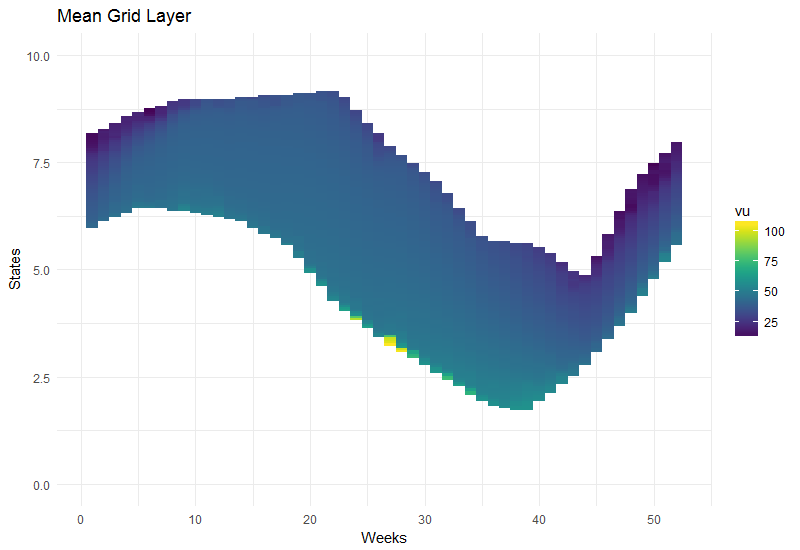
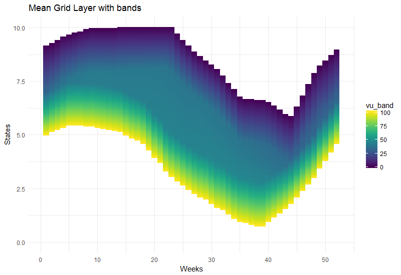

antaresWaterValues.RmdThe antaresWaterValues package aims at generating and exporting water values for Antares v7. In this vignette, we detail how to use it step by step.
First we have to load antaresWaterValues and two helper packages. We also setup the path to the Antares study:
Next, it’s necessary to run a number of simulations in Antares. These simulations are launched from R with the runWaterValuesSimulation() function and are run by the Antares solver.
simulation_res <- runWaterValuesSimulation(
area = "fr",
nb_mcyears = 20,
path_solver = "D:/Program Files/RTE/Antares/7.0.0/bin/antares-7.0-solver.exe",
nb_disc_stock = 10,
overwrite = TRUE
)area is the relevant area.nb_mcyears is the number of Monte-carlo year that will be generated. Here we limit it to 10 to increase speed.path_solver is the path to the Antares solver.nb_disc_stock is the number of values used to discretize the stock level between 0 and the maximum value for the given area. Here 10 simulations are run, with 10 binding constraints ranging from 0 to 1.344 TWh, which is the maximum of hydro energy that can be produced in France over a week.overwrite allows to overwrite the area, cluster and binding constraint if they already exist.Water values are generated in R with the meanGridLayer() function, using the results of the above simulations.
value_nodes_2017 <- meanGridLayer(
area = "fr",
simulation_names = simulation_res$simulation_names,
simulation_values = simulation_res$simulation_values,
week_53 = 0,
nb_cycle = 2
)area is the relevant area.simulation_names are the names of the simulations (see the note below).simulation_values are their values.week_53 are the water values for the last week of the year.nb_cycle is the number of times to run the algorithm in a loop from the last week of the year to the first, in order to obtain more realistic start values for week 53.The result is a 7-column data.table: Bellman values are in the value_node column, and water values in the vu column.
Note: If simulations have not been run just before, their names and values can be retrieved this way:
simulation_names <- getSimulationNames(pattern = "decision")
simulation_names <- gsub(pattern = ".*eco-", replacement = "", x = simulation_names)
simulation_values <- gsub("decision|twh", "", simulation_names)
simulation_values <- gsub(",", ".", simulation_values)
simulation_values <- as.numeric(simulation_values)Results can be visualised with waterValueViz():

mean grid layer
It’s also possible to add bands around the values:

mean grid layer bands
In Antares, water values can be found in the Hydro > Local Data > Reservoir levels and water values section. They are formatted in a 365*101 matrix: days in rows and reservoir levels in columns. Hence the results of meanGridLayer() have to be rescaled on both dimensions and reshaped in order to fit into this matrix.
The function toAntaresFormat() allows to perform rescaling and reshaping in one single step. Then results can be written into Antares with antaresEditObject::writeWaterValues().